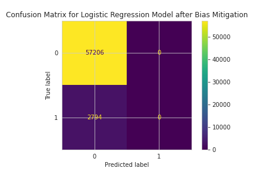

Model Card - IDOOU AI Budget Predictor
Model Details
-- Budget Predictor AI is a model designed to predict the budget range for users of the IDOOU app based on their personal attributes such as age, gender, and education level.
-- The model aims to enhance the personalization of activity recommendations by estimating an appropriate budget, thereby streamlining the user experience.
-- Developed using Logistic Regression, the model has demonstrated high accuracy and has been evaluated for fairness to ensure equitable treatment across different user groups.
Intended Use
-- The Budget Predictor AI is intended for use within the IDOOU app to provide personalized activity recommendations that align with users' budget constraints.
-- By integrating interpretability features, the app can offer explanations for the budget predictions, fostering user trust and understanding.
-- The model includes privacy-preserving measures to protect user data and prompts users to verify the correctness of the predicted budget, enhancing user control and engagement.
Factors
-- The model considers demographic factors such as age, gender, and education level, which have been identified as relevant predictors for budget preferences.
-- Care has been taken to ensure that these factors do not lead to discriminatory outcomes, with continuous monitoring and adjustments made as necessary.
-- The model is designed to adapt to a diverse user base, with ongoing evaluations to identify and mitigate any emergent biases.
Metrics
-- Model performance is primarily measured by accuracy, ensuring that the majority of budget predictions align with users' actual spending habits.
-- Fairness metrics such as statistical parity difference and disparate impact have been employed to assess and promote equity across different demographic groups.
-- Additional metrics including the confusion matrix and Theil index provide a comprehensive understanding of model performance and fairness.
Training Data
-- The training data consists of a synthetic dataset generated from a user experience study involving approximately 300,000 participants, reflecting a diverse range of user profiles.
Evaluation Data
-- Evaluation data is derived from a separate split of the synthetic dataset, ensuring that the model is tested on unbiased and representative samples not seen during training.
Quantitative Analysis
-- The Logistic Regression model's accuracy after bias mitigation remains high at 0.9534.
-- Before applying the bias mitigation strategy, the fairness metrics showed minimal bias.
-- After bias mitigation, the fairness metrics improved slightly, indicating a more equitable model.
Results of the AI model after applying the bias mitigation strategy

Ethical Considerations
-- The IDOOU Budget Predictor AI is designed to enhance user experience by personalizing activity recommendations based on demographic data. While the model aims to streamline decision-making, it raises ethical considerations regarding data privacy, potential biases, and transparency.
-- The dataset's limitations, such as the representation of certain demographic groups, could introduce biases, affecting the model's fairness. The model's reliance on attributes like gender and education may perpetuate existing societal biases. Despite efforts to mitigate bias, residual disparities may still exist.
-- Users have the ability to inspect and potentially correct the model's budget predictions, providing a level of human-in-the-loop control. Risk mitigation strategies, including reweighing techniques, have been applied to address fairness concerns. However, the model may still fail in cases where the data does not accurately represent individual circumstances.
-- Potential harms include reinforcing stereotypes or systematically disadvantaging certain groups. The interpretability study highlighted key factors influencing predictions, which were addressed to some extent by the bias mitigation strategy.
Caveats and Recommendations
-- The dataset may lack inclusiveness, failing to capture the full spectrum of user diversity. This could lead to a model predisposed to false positives or negatives, affecting certain groups disproportionately.
-- Recommendations include continuous monitoring of the model's performance and fairness, further diversification of the dataset, and implementing additional bias mitigation techniques as needed.
-- Further ethical AI analyses I would apply beyond this project: A thorough examination of intersectional biases, user feedback integration to refine the model iteratively, and an external audit to ensure compliance with ethical AI standards.
Business Consequences
-- Positive Impact: The IDOOU Budget Predictor AI can significantly enhance user satisfaction by providing tailored recommendations, potentially increasing user engagement and retention.
-- Negative Impact: If users perceive the recommendations as biased or irrelevant, trust in the application could erode, leading to a decline in user base, revenue, and damage to the organization's reputation.